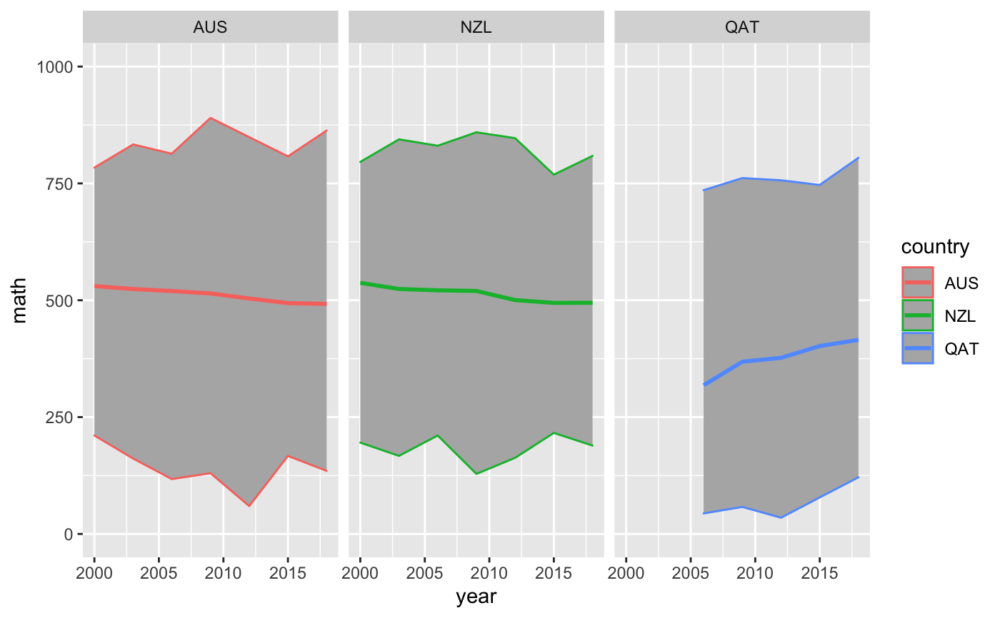

A subset of PISA data, containing scores and other information from the triennial testing of 15 year olds around the globe. Original data available from https://www.oecd.org/pisa/data/. Data derived from https://github.com/ropenscilabs/learningtower.
pisa
A tibble of the following variables
year the year of measurement
country the three letter country code. This data contains Australia, New Zealand, and Indonesia. The full data from learningtower contains 99 countries.
school_id The unique school identification number
student_id The student identification number
gender recorded gender - 1 female or 2 male or missing
math Simulated score in mathematics
read Simulated score in reading
science Simulated score in science
stu_wgt The final survey weight score for the student score
Understanding a bit more about the PISA data, the school_id and
student_id are not unique across time. This means the longitudinal element
is the country within a given year.
We can cast pisa as a tsibble, but we need to aggregate the data to each
year and country. In doing so, it is important that we provide some summary
statistics of each of the scores - we want to include the mean, and minimum
and maximum of the math, reading, and science scores, so that we do not lose
the information of the individuals.
The example code below does this, first grouping by year and country, then
calculating the weighted mean for math, reading, and science. This can be
done using the student weight variable stu_wgt, to get the survey weighted
mean. The minimum and maximum are then calculated.
pisa#> # A tibble: 172,959 x 9 #> year country school_id student_id gender math science read stu_wgt #> <int> <fct> <int> <int> <int> <dbl> <dbl> <dbl> <dbl> #> 1 2000 AUS 1006 1 1 NA 469. 526 5.60 #> 2 2000 AUS 1006 2 2 NA 607. 559. 5.60 #> 3 2000 AUS 1006 3 2 NA 335. 383. 5.60 #> 4 2000 AUS 1006 4 1 NA 576 595 5.60 #> 5 2000 AUS 1006 7 2 550. 585. 497. 5.60 #> 6 2000 AUS 1006 9 2 NA 516. 532. 5.60 #> 7 2000 AUS 1006 10 2 NA 514. 575. 5.60 #> 8 2000 AUS 1006 12 2 377 384. 325. 5.60 #> 9 2000 AUS 1006 13 2 NA 458. 452. 5.60 #> 10 2000 AUS 1006 14 2 588. 499 507. 5.60 #> # … with 172,949 more rowslibrary(dplyr) pisa_country <- pisa %>% group_by(year, country) %>% summarise(math_mean = weighted.mean(math, stu_wgt, na.rm=TRUE), read_mean = weighted.mean(read, stu_wgt, na.rm=TRUE), science_mean = weighted.mean(science, stu_wgt, na.rm=TRUE), math_max = max(math, na.rm=TRUE), read_max = max(read, na.rm=TRUE), science_max = max(science, na.rm=TRUE), math_min = min(math, na.rm=TRUE), read_min = min(read, na.rm=TRUE), science_min = min(science, na.rm=TRUE)) %>% ungroup() pisa_country#> # A tibble: 21 x 11 #> year country math_mean read_mean science_mean math_max read_max science_max #> <int> <fct> <dbl> <dbl> <dbl> <dbl> <dbl> <dbl> #> 1 2000 AUS 530. 529. 527. 784. 828. 800. #> 2 2000 IDN 371. 376. 394. 646. 610. 680. #> 3 2000 NZL 537. 529. 528. 796 834. 830. #> 4 2003 AUS 524. 525. 526. 833. 868. 848. #> 5 2003 IDN 360. 395. 381. 674. 666. 671. #> 6 2003 NZL 524. 522. 522. 844. 857. 868. #> 7 2006 AUS 520. 527. 512. 814. 869 808. #> 8 2006 IDN 391. 393. 393. 720. 671. 641 #> 9 2006 NZL 521. 530. 521. 831. 887. 890. #> 10 2009 AUS 515. 528. 515. 890. 884. 803. #> # … with 11 more rows, and 3 more variables: math_min <dbl>, read_min <dbl>, #> # science_min <dbl>pisa_ts <- as_tsibble(pisa_country, key = country, index = year, regular = TRUE) # pisa data library(ggplot2) gg_pisa <- ggplot(pisa_ts, aes(x = year, y = math_mean, group = country)) + geom_ribbon(aes(ymin = math_min, ymax = math_max), fill = "grey70") + geom_line(size = 1) + lims(y = c(0, 1000)) + labs(y = "math") gg_pisa + facet_wrap(~country)